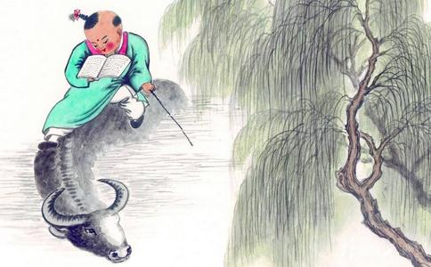

过去世有位
有一个小孩子，年龄只有七岁，在城外放牧牛群。他远远地听到比丘诵经的声音，就随着声音，走到了 寺庙之中。他向比丘
小孩子离开了寺庙，回到牧牛的地方，他所放牧的小牛犊都跑散到深山里去了。小孩跟着牛的足迹，追 踪寻找，路上遇到了一只老虎，将小孩吞食了。小孩命终后，神识
夫人在怀孕期间，口中便能念般若波罗蜜经。她从早到晚一直念，从不
有一天，那位比丘进城分卫乞食，走到长者家门口，隐隐地听到念经的声音，心中非常喜悦，久久站在 门前不愿走开。主人偶然出门，见到这位比丘，也不行礼。比丘心中觉得很奇怪，心想，如此贤善人的家 中，念经声音妙不可言，而这位长者见到我却又不打招呼，这是什么缘故呢？于是就问长者道：“你 家中有谁在念深奥的
长者答道：“我的夫人得了鬼病，昼夜不断地说胡话，口中始终不得停息。”
比丘才知道这位长者不懂佛法，于是对他说：“这不是鬼病呀！她是在念尊贵的经典，是佛说的 大道啊！我愿到你家中与她相见。”
长者答应可以，就将比丘带到他夫人的房间里。妇人见到比丘，随即向他行礼。比丘为她祝愿说： “你很快会成就佛道。”夫人便与比丘相互问难，解说经法，两人反复披题解答，比丘欣赏非 常。
长者问比丘说：“这是什么病呀？”
比丘告诉他道：“夫人无病。她是在说深妙的经典，人
长者的心意解开了，就留比丘吃了斋饭。饭后，比丘便回寺庙去了。
这件事辗转相传，说有一长者夫人，怀孕后非常奇怪，口中讽诵
过了几天，长者又邀请比丘和其他僧众一齐到他家中，设斋供奉。午时到了，僧众坐定，用水洗过手， 进食过后，僧众咒愿，答谢主人。这时夫人由房中走出，给众比丘行礼，坐到一边，又为众比丘畅说经法 ，凡有疑难和不明白的经文部分，尽为众比丘解说
分娩的时间到了，夫人临产，生下一个男孩，没有恶露。婴儿出生时，手叉胸前，长跪合掌，口诵般若 波罗蜜经。夫人生育后，仍如未怀孕时一样，再也不知经文了，真如梦后醒来一样，什么也记不清了。
长者随即又请来众僧人，比丘们都聚集到他家中，婴儿说经文上的故事，始终没有任何障碍。当时，众 僧各各
长者问道：“这是什么缘故呢？”
比丘答道：“他是真佛子啊！慎重慎重，切勿惊疑，好好地护养，这孩子日后长大当为一切大众 作导师。我等悉数要跟从他，接受他的启迪。”
男孩日渐长大，年龄到了七岁，熟悉地了知世出世间的一切微妙法门，不论
……
佛告诉阿难说：“那时的小儿就是我的过去身啊！那时的比丘就是
菩萨锐志度无极精进如是。